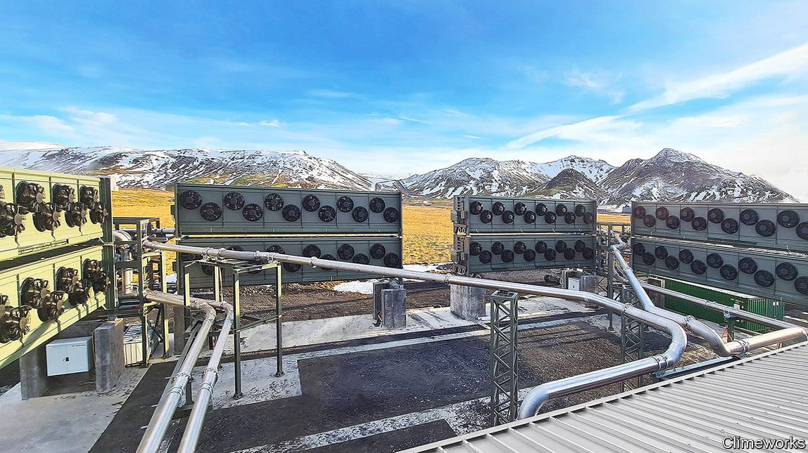

2021-10-11T14:45:57+00:00
从大气中除碳
世界最大的吸碳工厂投产
要价虽高，但顾客盈门
九月九日下午六点刚过，位于冰岛首都雷克雅未克城外的奥卡（Orca）碳捕获工厂启动了风扇，开始从空气中吸收二氧化碳。风扇的声音不大，有点像汩汩的流水声。但这家工厂的创建者希望这将是人类与气候的关系中一个重大的转捩点。
想要从大气中去除二氧化碳的“直接空气捕获”行业正处于萌芽阶段，奥卡目前是此类工厂中规模最大的一间。捕获到的二氧化碳被封存于地底之后，就被记作“负排放”——这是应对全球变暖的一种重要但尚不成熟的方法。根据《巴黎气候协定》，为了避免气温比工业化前平均水平升高1.5甚至2摄氏度，必须在本世纪下半叶从大气中移除数千亿乃至上万亿吨的二氧化碳。
目前唯一能吸收二氧化碳的办法就是植树，但这种做法并非万无一失。树木会被野火烧毁，也会被砍伐。这个时候它们储存的大部分碳都会逃逸。奥卡工厂为人们指出了另一条道路。工厂的所有者Climeworks公司开发了一种化学过滤器，可以在空气通过时截留二氧化碳。然后在加热时再次释放二氧化碳，形成气流，由另一家名为Carbfix的公司继续处理。
Carbfix用管道把这些气体输送到附近的井中，与水混合，然后将产生的碳酸水泵入基岩中。在冰岛，基岩几乎全都是火山玄武岩，其中含有的矿物质与二氧化碳反应形成碳酸钙，这种白色晶体是石灰石的主要成分。这样一来，整个处理过程就从空气中提取出二氧化碳并将其转化为岩石。试验表明，冰岛的玄武岩可以在两年内将二氧化碳封存到坚硬的岩石中。工厂所用电力来自附近的地热发电站。
一个难题是规模。世界每年燃烧化石燃料约产生350亿吨二氧化碳，而奥卡每年只能捕获4000吨。Climeworks公司“有信心”在这个十年内让捕获量达到百万吨级。（之前它曾提出令人瞠目的宏伟目标——到2025年捕获总排放量的1%，如今已不大可能实现了。）
另一个问题是成本。奥卡每封存一吨二氧化碳要花费600到800美元，它在网上出售碳中和指标的价格约为每吨1200美元。该公司认为，通过规模经济可以将成本降低十倍。但即使目前价格高昂，似乎也不缺愿意掏腰包的客户。就在奥卡的风扇开始转动之时，它已经售出了其整个寿命周期内可提供脱碳量的约三分之二。其客户包括微软、瑞士再保险（以及本刊）等寻求抵消部分碳排放的企业，另外还有8000多名个人。
Climeworks并不是唯一看到商机的公司。加拿大公司Carbon Engineering正准备启动自己的除碳工厂，它使用了不同的化学工艺。要让这个产业达到十亿吨级规模，光靠这些先行的工程师和金融家是不够的。但起码风扇已经转起来了。
2021-10-11T14:45:57+00:00
Removing carbon dioxide from the air
The world’s biggest carbon-removal plant switches on
Despite high prices, customers are lining up
SHORTLY AFTER 6pm on September 9th, the Orca carbon-capture plant, just outside Reykjavik in Iceland, switched on its fans and began sucking carbon dioxide from the air. The sound was subtle—a bit like a gurgling stream. But the plant’s creators hope it will mark a big shift in humanity’s interaction with the climate.
Orca is, for now, the largest installation in the infant “direct air capture” industry, which aims to remove CO2 from the atmosphere. When sealed underground such CO2 counts as “negative emissions”—an essential but underdeveloped method for tackling global warming. To stop temperatures rising by 1.5°C or even 2°C above pre-industrial averages, as per the Paris climate agreement, hundreds or thousands of billions of tonnes of CO2 will have to be removed from the atmosphere in the second half of the century.
Currently, the only means of doing that is planting trees, an option that is not entirely without drawbacks. Trees burn in wildfires and can be cut down. When this happens, much of the carbon they store escapes. The Orca plant shows another way. Climeworks, the company that owns it, has developed chemical filters which snag CO2 when air passes through them. When heated they release the CO2 again, generating a stream of gas that is handed to another firm called Carbfix.
Carbfix pipes the gas to nearby wells, mixes it with water and pumps the resulting carbonated water into the bedrock. In Iceland that consists almost entirely of volcanic basalts, which contain minerals that react with carbon dioxide to form calcium carbonate, a white crystal that is the main ingredient in limestone. Thus, the full operation extracts CO2 from air and turns it to rock. Trials have shown that Icelandic basalts can sequester CO2 in solid rock within two years. Power comes from a nearby geothermal power station.
One catch is volume. Orca will capture 4,000 tonnes of carbon dioxide a year, out of around 35bn tonnes produced by burning fossil fuels. Climeworks is “confident” it can reach millions of tonnes before the decade is out. (A previous, eye-popping ambition to grab 1% of emissions by 2025 is no longer on the cards.)
Another is cost. It costs Orca somewhere between $600-800 to sequester one tonne of carbon dioxide, and the firm sells offset packages online for around $1,200 per tonne. The company thinks it can cut costs ten-fold through economies of scale. But there appears to be no shortage of customers willing to pay the current, elevated price. Even as Orca’s fans revved up, roughly two-thirds of its lifetime offering of carbon removals had already been sold. Clients include corporations seeking to offset a portion of their emissions, such as Microsoft, Swiss Re (and The Economist), as well as over 8,000 private individuals.
Climeworks is not alone in having spotted the opportunity. Using different chemistry, Carbon Engineering, a Canadian company, is gearing up to switch on its own carbon-scrubbing facilities. It will take more than these pioneer engineers and financiers to build a gigatonne-sized industry. But the fans are turning. ■
2021-10-11T14:45:57+00:00
從大氣中除碳
世界最大的吸碳工廠投產
要價雖高，但顧客盈門
九月九日下午六點剛過，位於冰島首都雷克雅未克城外的奧卡（Orca）碳捕獲工廠啟動了風扇，開始從空氣中吸收二氧化碳。風扇的聲音不大，有點像汩汩的流水聲。但這家工廠的創建者希望這將是人類與氣候的關係中一個重大的轉捩點。
想要從大氣中去除二氧化碳的“直接空氣捕獲”行業正處於萌芽階段，奧卡目前是此類工廠中規模最大的一間。捕獲到的二氧化碳被封存於地底之後，就被記作“負排放”——這是應對全球變暖的一種重要但尚不成熟的方法。根據《巴黎氣候協定》，為了避免氣溫比工業化前平均水平升高1.5甚至2攝氏度，必須在本世紀下半葉從大氣中移除數千億乃至上萬億噸的二氧化碳。
目前唯一能吸收二氧化碳的辦法就是植樹，但這種做法並非萬無一失。樹木會被野火燒毀，也會被砍伐。這個時候它們儲存的大部分碳都會逃逸。奧卡工廠為人們指出了另一條道路。工廠的所有者Climeworks公司開發了一種化學過濾器，可以在空氣通過時截留二氧化碳。然後在加熱時再次釋放二氧化碳，形成氣流，由另一家名為Carbfix的公司繼續處理。
Carbfix用管道把這些氣體輸送到附近的井中，與水混合，然後將產生的碳酸水泵入基岩中。在冰島，基岩幾乎全都是火山玄武岩，其中含有的礦物質與二氧化碳反應形成碳酸鈣，這種白色晶體是石灰石的主要成分。這樣一來，整個處理過程就從空氣中提取出二氧化碳並將其轉化為岩石。試驗表明，冰島的玄武岩可以在兩年內將二氧化碳封存到堅硬的岩石中。工廠所用電力來自附近的地熱發電站。
一個難題是規模。世界每年燃燒化石燃料約產生350億噸二氧化碳，而奧卡每年只能捕獲4000噸。Climeworks公司“有信心”在這個十年內讓捕獲量達到百萬噸級。（之前它曾提出令人瞠目的宏偉目標——到2025年捕獲總排放量的1%，如今已不大可能實現了。）
另一個問題是成本。奧卡每封存一噸二氧化碳要花費600到800美元，它在網上出售碳中和指標的價格約為每噸1200美元。該公司認為，通過規模經濟可以將成本降低十倍。但即使目前價格高昂，似乎也不缺願意掏腰包的客戶。就在奧卡的風扇開始轉動之時，它已經售出了其整個壽命周期內可提供脫碳量的約三分之二。其客戶包括微軟、瑞士再保險（以及本刊）等尋求抵消部分碳排放的企業，另外還有8000多名個人。
Climeworks並不是唯一看到商機的公司。加拿大公司Carbon Engineering正準備啟動自己的除碳工廠，它使用了不同的化學工藝。要讓這個產業達到十億噸級規模，光靠這些先行的工程師和金融家是不夠的。但起碼風扇已經轉起來了。